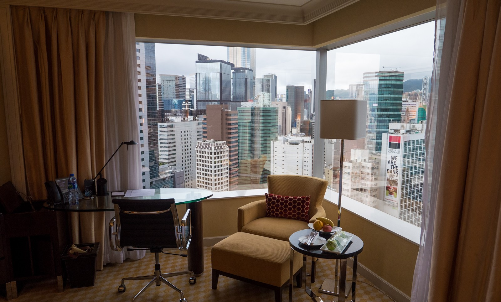
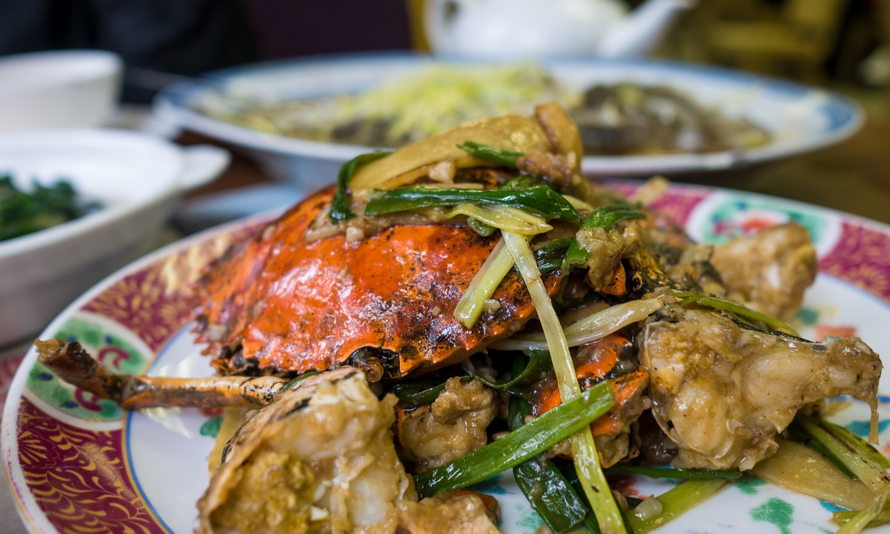

Introduction to Hong Kong
In this Hong Kong Travel Guide for Food Lovers you’ll find personal tips and recommendations about where to stay, things to do, and details about some of the best food to eat in Hong Kong.
Home to one of the world’s most spectacular skylines with a natural harbor and lush green mountains, Hong Kong is a densely packed city where you’ll discover fresh wet markets slotted between skyscrapers and delicious food nearly everywhere you look.
From sightseeing to shopping to eating, Hong Kong offers you a full sensory travel experience.
In this Amman travel guide for food lovers, We'r going to share with you a little bit about where we stayed, what we did, and some of the top restaurants we tried during our trip to Amman.

Places to stay in Hong Kong
Just like in all my travel guides for food lovers, I like to break down the accommodation in a city by the area or neighborhood.
1. Hong Kong Central
Located on Hong Kong Island, around Hong Kong station to Sheung Wan and Admiralty, this is the center of Hong Kong commerce and business. If you want to be on Hong Kong Island, in the middle of it all, this is the best area to find a hotel. There are limitless options for food, shopping, and wandering. For a luxury option, on our latest trip to Hong Kong my wife and I were sponsored to stay at JW Marriott Hotel Hong Kong, and we had an amazing stay. There aren’t many budget options around Hong Kong Central, but there are some mid-ranged hotels like 338 Apartment.
2. Causeway Bay
To still be on Hong Kong Island, but a little further away from the main central banking district of Hong Kong Central and in an area of Hong Kong that has a little more of a neighborhood feel to it, Causeway Bay is a fantastic area for you to stay. I love the restaurants and eating options around Causeway Bay and the local markets. There’s a mix of accommodation available, especially mid-range hotels like Holiday Inn Express. On one of my previous visits to Hong Kong I stayed at Rosedale Hotel, which was a decent hotel, in a great location.

Hong Kong food
In a city that’s world famous for finance and its shipping industry, food is the backbone and obsession of many Hong Kong residents.
Located in a strategic position on an island off the coast of mainland China, and with a unique history of foreign and colonial influence, Hong Kong’s food scene is diverse and always exciting.